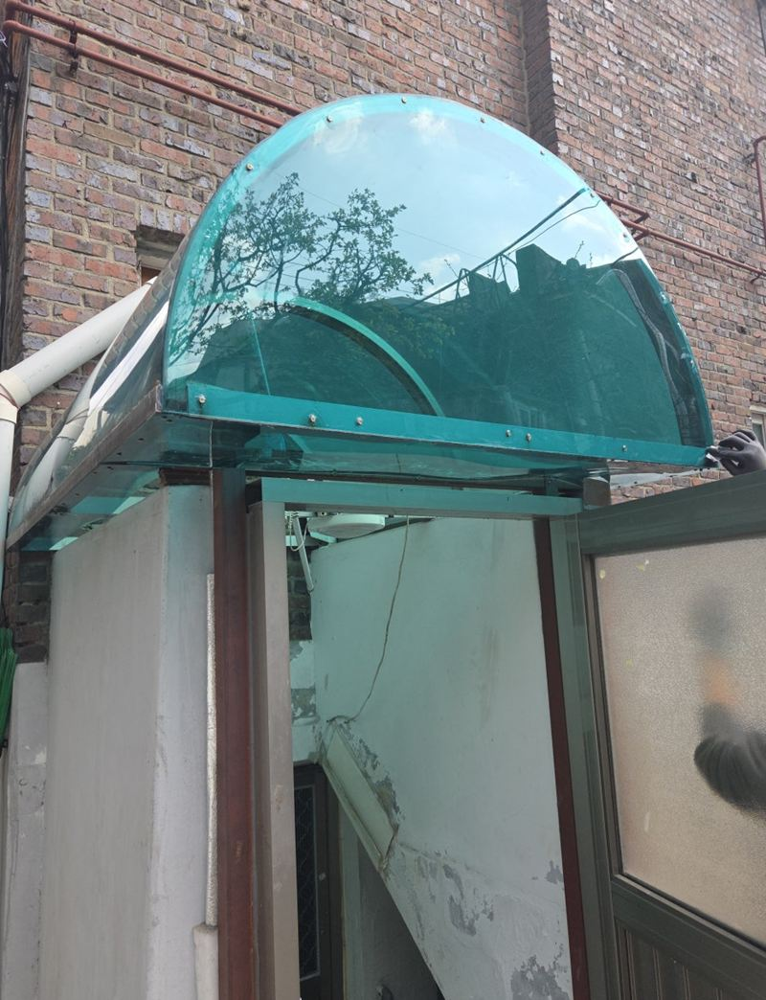
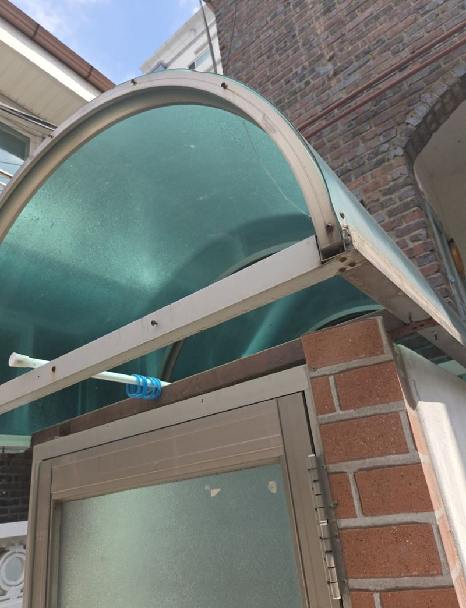
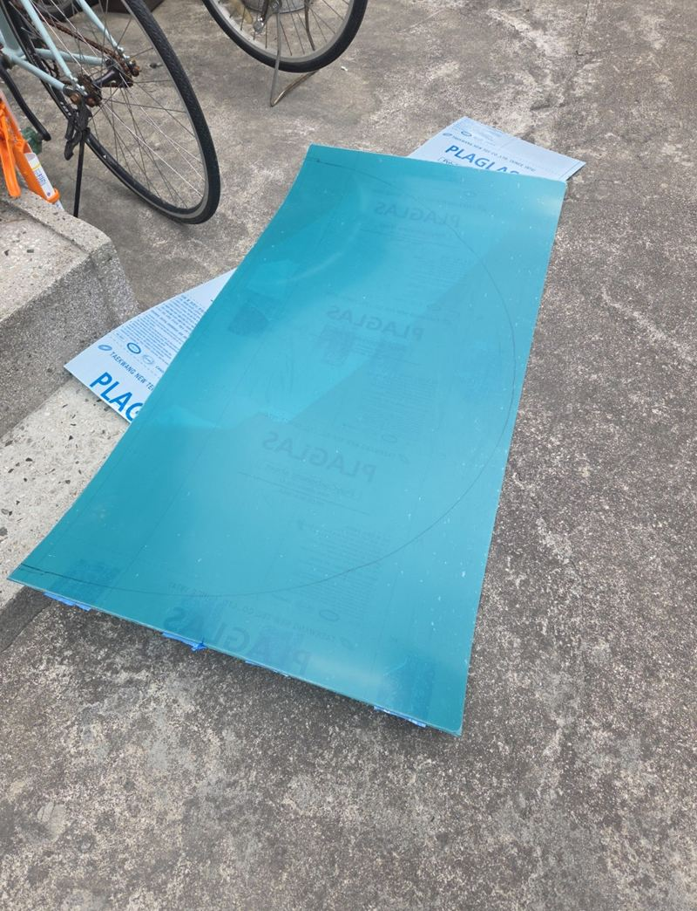
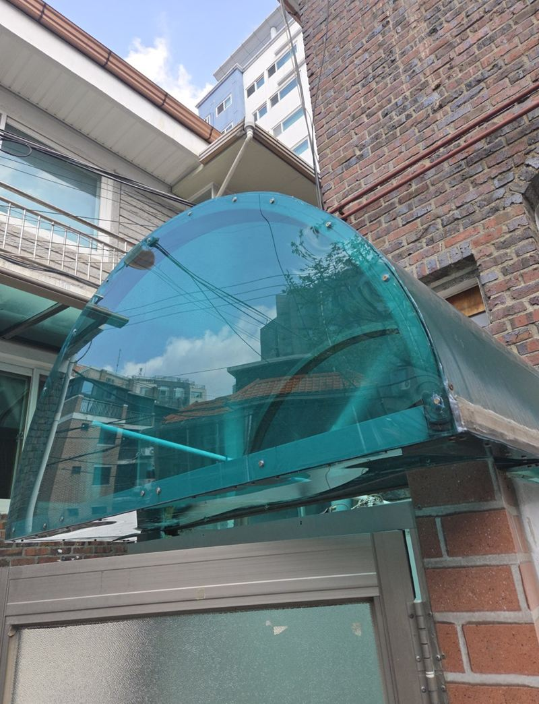
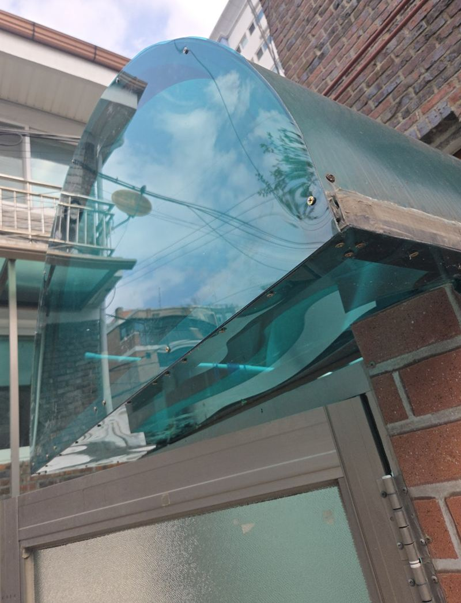
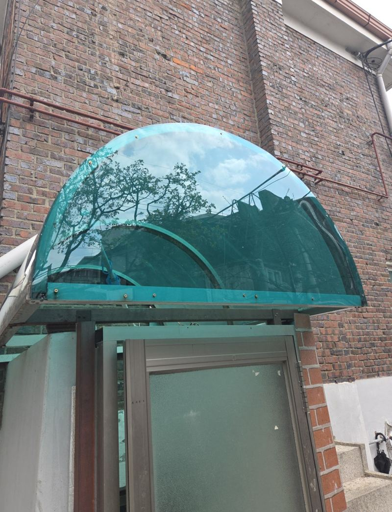

노원 렉산 부분 보수·보강 시공 비용
← 밀어서 전후 비교 →
오래 비워 두었던 노원구 빌라 1층을 따님이 들어와 살 집으로 다시 쓰려던 참이었어요. 출입문 위 반원형 캐노피는 렉산이 깨져 떨어져 나가고 뼈대만 남아, 비가 오면 문 앞이 그대로 젖었어요. 고객분은 전체를 뜯기보다 상한 부분만 정리하길 원하셨어요. 남은 뼈대를 살리고, 실측해 재단한 렉산을 곡면에 맞춰 끼운 뒤 결속을 보강하고 실리콘으로 마감했어요.
| 현장 | 서울 노원구 빌라 출입문 위 캐노피 |
|---|---|
| 증상 | 렉산 파손·탈락, 남은 부분도 고정이 불안함 |
| 요청 | 전체 교체 대신 상한 부분만 보수 |
| 한 일 | 실측 → 렉산 준비·현장 재단 → 곡면에 맞춰 설치 → 결속 보강 → 나사·연결부 실리콘 → 노후 부분 보완 |
뼈대가 멀쩡하면 판만 바꿔요
캐노피는 알루미늄 뼈대 위에 렉산판을 얹어 고정한 구조예요. 렉산은 햇빛, 바람, 온도 변화를 계속 받아 몇 년 지나면 약해지고 고정부가 느슨해져 깨지기 쉬워요. 그런데 뼈대는 그보다 오래 버티는 경우가 많아요. 이 현장도 뼈대는 쓸 만해서 판만 새로 끼우는 쪽으로 정했어요.


겉보기엔 판 한 장 바꾸는 일 같지만, 남은 뼈대가 새 판을 버틸 수 있는지, 벽 고정이 흔들리지 않는지까지 봐야 해요.
곡면 렉산을 맞춰 끼우는 과정
실측
기존 뼈대에 이어 붙이는 방식이라 치수가 조금만 달라도 틈이 생겨요. 곡면 길이와 폭을 재서 렉산을 준비했어요.

현장 재단
같은 규격이라도 현장마다 각도와 길이가 미세하게 달라요. 실제 자리에 대 보며 잘라 맞췄어요.
설치와 결속 보강
판을 곡면을 따라 끼운 뒤, 바람이나 충격에도 흔들리지 않게 고정 부위를 단단히 묶었어요.


실리콘 마감
나사와 연결부로 물이 스미지 않게 실리콘을 채우고, 오래돼 갈라진 기존 마감도 함께 손봤어요.

렉산 보수 비용이 갈리는 것
| 상황 | 작업 범위 |
|---|---|
| 판만 깨지고 뼈대 튼튼 | 렉산 재단·교체, 실리콘 |
| 뼈대 일부 휨·부식 | 뼈대 보강이나 부분 교체 추가 |
| 벽 고정부까지 흔들림 | 앙카 재고정 추가 |
| 모양이 특이한 곡면 | 재단 손이 더 감 |
이번에는 전체를 바꾸지 않고 필요한 부분만 보완해 부담을 줄였어요. 보수 후 비와 햇빛을 다시 막아 주고, 문 앞이 한결 정돈돼 보였어요. 고객분은 "딸이 살 집이라 걱정이 많았는데 필요한 데만 깔끔하게 해 줘서 좋았다"고 하셨어요.
렉산 캐노피 오래 쓰려면
- 낙엽 치우기위에 쌓인 낙엽과 흙은 물을 머금어 판을 상하게 해요.
- 금 간 곳 일찍 보기작은 금이 바람에 커져 판 전체가 떨어지기도 해요.
- 실리콘 상태갈라진 실리콘 틈으로 물이 들어 벽까지 얼룩져요.
부분 보수와 전체 교체, 이렇게 갈라요
- 부분 보수뼈대와 벽 고정이 튼튼하고, 깨진 판만 문제일 때 맞아요.
- 전체 교체뼈대가 휘거나 부식됐고 벽 고정까지 흔들리면 처음부터 새로 맞추는 게 나아요.
- 같은 색을 원할 때오래된 렉산은 색이 바래 있어 새 판과 차이가 날 수 있어요. 미리 알고 고르는 게 좋아요.
렉산 부분 보수 질문
색을 바꿀 수 있나요?
투명, 청색, 브론즈 등 다른 색 렉산으로 바꿀 수 있어요.
렉산과 폴리카보네이트는 같은 건가요?
네, 같은 소재를 흔히 렉산이라고 불러요.
뼈대가 녹슬었어요.
녹 범위를 보고 정리·도장할지, 그 부분만 바꿀지 정해요.
베란다 지붕 렉산도 하나요?
베란다, 주차장, 출입문 위 등 렉산 구조물은 대부분 해요.
비 오는 날에도 하나요?
실리콘이 젖으면 붙지 않아 맑은 날로 잡아요.
물이 새는 것만 막을 수도 있나요?
판이 멀쩡하면 실리콘 재시공만으로 되는 경우도 있어요.
오래 비워 둔 집인데 다른 데도 봐 주나요?
외부 구조물 말고도 실리콘, 문, 수전처럼 손볼 곳을 함께 살펴볼 수 있어요.
렉산 두께도 고를 수 있나요?
두꺼울수록 단단하지만 곡면에 휘어 넣기 어려워져요. 모양에 맞는 두께를 골라요.
다른 렉산·우수관 현장
캐노피 정면과 깨진 부분, 벽에 붙은 자리를 찍어 보내 주세요.
전화 상담 010-4517-9872